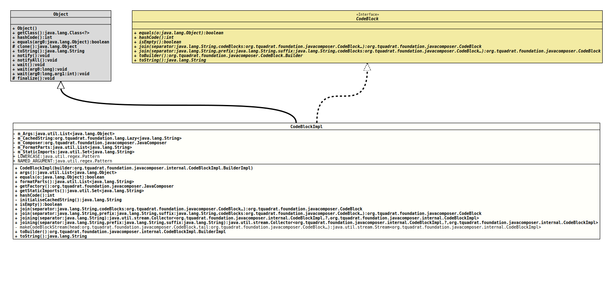

Class CodeBlockImpl
- All Implemented Interfaces:
CodeBlock
CodeBlock
for a fragment of a *.java file.- Author:
- Square,Inc.
- Modified by:
- Thomas Thrien (thomas.thrien@tquadrat.org)
- Version:
- $Id: CodeBlockImpl.java 1105 2024-02-28 12:58:46Z tquadrat $
- Since:
- 0.0.5
- UML Diagram
-

UML Diagram for "org.tquadrat.foundation.javacomposer.internal.CodeBlockImpl"
{kind=link}
-
Nested Class Summary
Nested ClassesModifier and TypeClassDescriptionstatic final classThe implementation ofCodeBlock.Builderas the builder for a newCodeBlockImplinstance.private static final classA helper class that supports to join code blocks.Nested classes/interfaces inherited from interface org.tquadrat.foundation.javacomposer.CodeBlock
CodeBlock.Builder -
Field Summary
FieldsModifier and TypeFieldDescriptionstatic final PatternThe regular expression that is used to determine whether a parameter name starts with a lowercase character.The arguments.Lazily initialised return value oftoString()for this code block.private final JavaComposerThe reference to the factory.A heterogeneous list containing string literals and value placeholders.The static imports.static final PatternThe regular expression that is used to obtain the argument name from a format string. -
Constructor Summary
ConstructorsConstructorDescriptionCodeBlockImpl(CodeBlockImpl.BuilderImpl builder) Creates a newCodeBlockImplinstance. -
Method Summary
Modifier and TypeMethodDescriptionargs()Returns the arguments.final booleanReturns the format parts from this code block.final JavaComposerReturns theJavaComposerfactory.Returns the static imports for this code block.final inthashCode()private final StringThe initializer form_CachedString.final booleanisEmpty()Checks whether this code block is empty.final CodeBlockJoins this code block with the given code blocks into a single newCodeBlockinstance, each separated by the given separator.final CodeBlockJoins this code block with the given code blocks into a single newCodeBlockinstance, each separated by the given separator.final Collector<CodeBlockImpl, ?, CodeBlockImpl> ACollectorimplementation that joinsCodeBlockinstances together into one new code block, separated by the given separator.final Collector<CodeBlockImpl, ?, CodeBlockImpl> ACollectorimplementation that joinsCodeBlockinstances together into one new code block, separated by the given separator.private static final Stream<CodeBlockImpl> makeCodeBlockStream(CodeBlock head, CodeBlock... tail) Composes a stream from the givenCodeBlockinstances.Creates a new builder that is initialised with the components of this code block.final StringtoString()
-
Field Details
-
m_Args
The arguments. -
m_CachedString
Lazily initialised return value oftoString()for this code block. -
m_Composer
The reference to the factory. -
m_FormatParts
A heterogeneous list containing string literals and value placeholders. -
m_StaticImports
The static imports. -
LOWERCASE
The regular expression that is used to determine whether a parameter name starts with a lowercase character. -
NAMED_ARGUMENT
The regular expression that is used to obtain the argument name from a format string.
-
-
Constructor Details
-
CodeBlockImpl
Creates a newCodeBlockImplinstance.- Parameters:
builder- The builder for this instance.
-
-
Method Details
-
args
Returns the arguments.- Returns:
- The arguments.
-
equals
-
formatParts
Returns the format parts from this code block.- Returns:
- The format parts.
-
getFactory
Returns theJavaComposerfactory.- Returns:
- The reference to the factory.
-
getStaticImports
Returns the static imports for this code block.- Returns:
- The static imports.
-
hashCode
-
initialiseCachedString
The initializer form_CachedString.- Returns:
- The return value for
toString().
-
isEmpty
Checks whether this code block is empty. -
join
Joins this code block with the given code blocks into a single new
CodeBlockinstance, each separated by the given separator.For example, joining "
String s", "Object o" and "int i" using "," as the separator would produce "String s, Object o, int i". -
join
public final CodeBlock join(String separator, String prefix, String suffix, CodeBlock... codeBlocks) Joins this code block with the given code blocks into a single new
CodeBlockinstance, each separated by the given separator. The given prefix will be prepended to the newCodeBloc, and the given suffix will be appended to it.For example, joining "
String s", "Object o" and "int i" using "," as the separator would produce "String s, Object o, int i". -
joining
A
Collectorimplementation that joinsCodeBlockinstances together into one new code block, separated by the given separator.For example, joining "
String s", "Object o" and "int i" using "," as the separator would produce "String s, Object o, int i".- Parameters:
separator- The separator.- Returns:
- The new collector.
-
joining
public final Collector<CodeBlockImpl,?, joiningCodeBlockImpl> (String separator, String prefix, String suffix) A
Collectorimplementation that joinsCodeBlockinstances together into one new code block, separated by the given separator. The given prefix will be prepended to the newCodeBloc, and the given suffix will be appended to it.For example, joining "
String s", "Object o" and "int i" using "," as the separator, and "int func(" as the prefix and ")" as the suffix respectively would produce "int func( String s, Object o, int i )".- Parameters:
separator- The separator.prefix- The prefix.suffix- The suffix.- Returns:
- The new collector.
-
makeCodeBlockStream
Composes a stream from the givenCodeBlockinstances.- Parameters:
head- The first code block.tail- The other code blocks.- Returns:
- The
Streaminstance with theCodeBlockinstances.
-
toBuilder
Creates a new builder that is initialised with the components of this code block. -
toString
-